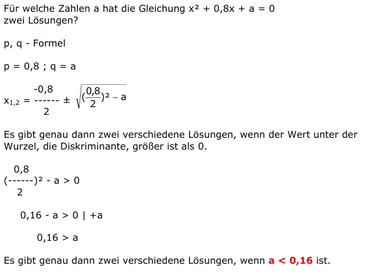

Aufgabe 79 Für welche Zahlen a hat die Gleichung x2 + 0,8x + a = 0 zwei Lösungen? p, q - Formel p = 0,8 ; q = a  Es gibt genau dann zwei verschiedene Lösungen, wenn der Wert unter der Wurzel, die Diskriminante, größer ist als 0. 0,8 (------)2 - a > 0 2 0,16 - a > 0 |+a 0,16 > a Es gibt genau dann zwei verschiedene Lösungen, wenn a < 0,16 ist.